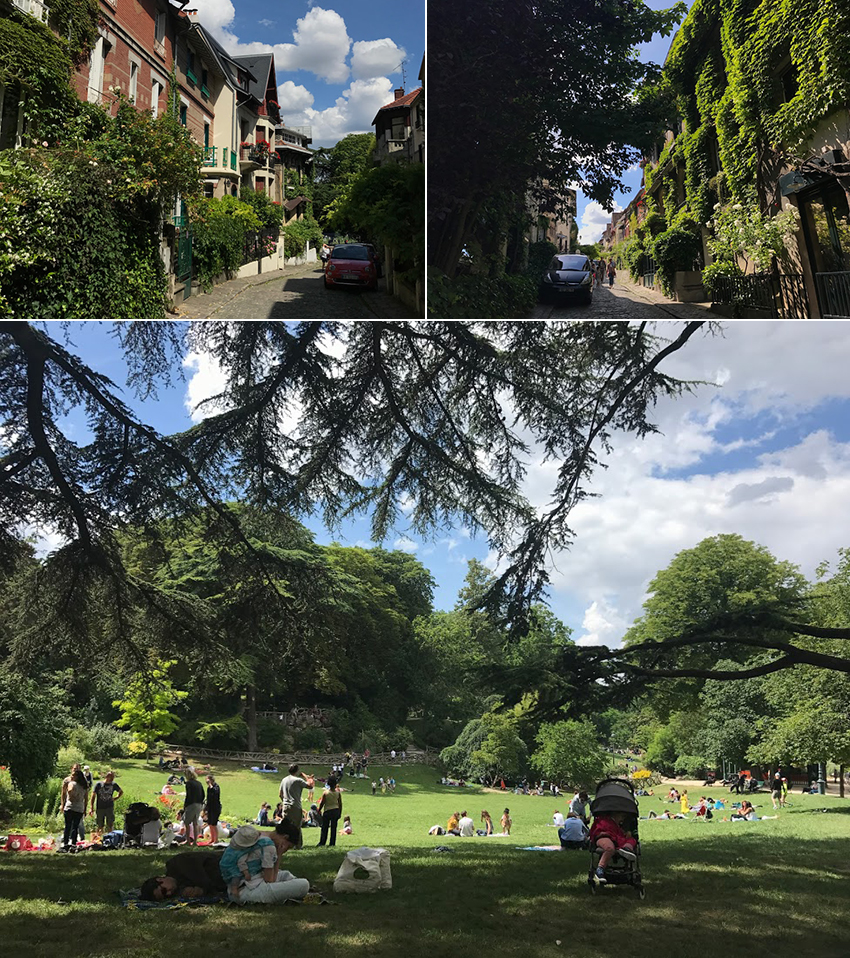

藝術之都除了洋溢著文藝氣息，也是個綠意盎然的城市，三步一綠地、五步一公園，大概也是為什麼這麼令人放鬆自在的原因之一了！修建公園最早出現於第二帝國時期，目的在於提供巴黎四個方位一塊綠色空間，讓市民有休憩的去處：東邊是Bois de Vincennes，西邊是Bois de Boulogne，南邊是Parc Montsouris，而北邊則是Parc des Buttes-Chaumont。
因為離住家比較近，常坐輕軌到巴黎南方的Montsouris公園，下車後到附近晃晃，意外地走到一條巷子Square de Montsouris，散步在綠蔭小巷，每一間牆面外觀讓蕨類恣意攀爬生長，配上大好晴天，彷彿來到人間仙境，鏡頭捕捉不來的，用眼用心去記憶。
|  |
1867年建成的Buttes-Chaumont公園是巴黎面積第五大的綠地，約等同於大安森林公園，它原來是石灰石礦場，後來變成城市垃圾場，再經過設計師阿爾方的妙手回春，將部分石灰岩地形保留下來，並用混凝土等材料模仿喀斯特地貌，因為地形高低差甚大，還富有懸崖峭壁，很多人也都在這邊眺望欣賞城市風景。位在坡道上還有一家Rosa Bonheur 酒吧，經過的那天傍晚剛好有Live music，點了一杯啤酒坐在一旁的草皮感受當下，還好天色暗得晚，喝完一杯後還能不疾不徐地散步去搭地鐵。
驅車往南到La croix de Berny，和凡爾賽宮一樣的庭園設計師也規劃了Parc de Sceaux，一個人走在這個廣大遼闊的公園，加上夏日的午後人煙稀少，走的每一步安靜得好像都能聽到自己的腳步聲、呼吸聲和心跳聲。因為占地實在是太大，又沒有什麼遮蔽物，在豔陽下走不到一半就快把隨身的水喝完了，找到了一片樹蔭稍作歇息。看著風拂過水面起的漣漪，可能因為走累了吧，有那麼幾分鐘腦袋完全放空，沒想到內心可以有這麼平靜的瞬間。春天時的Parc de Sceaux因為綻放著滿片的櫻花，總能吸引到各國的觀光客前來朝聖，不過跟熱鬧的公園相比，還是喜歡寧靜的庭園。
盧森堡公園位在甜點密集區附近，很適合外帶甜點到池塘邊坐著慢慢享受。午後的坐椅一位難求，周末還會有家長帶著孩子到池塘邊賽帆船，越是回歸純樸，越讓人印象深刻。在這個網路時代，放下手機，好好陪伴身邊的人其實也是一種充電方式！
從羅浮宮往凱旋門會經過杜樂麗花園、協和廣場和香榭麗榭大道，徜徉在這條華麗的林蔭大道，地圖上看似短程，卻有4公里之長，還好在這座巴黎最古老，最奢華的花園中有躺椅能半路休息。天色漸暗的傍晚是天氣最舒適的時候，還是有人跟我一樣捨不得離開，待在池塘邊發呆、看書、聊天。
除了穿梭在大街小巷內，我也喜歡登高望遠，除了巴黎鐵塔、聖母院 、凱旋門 、蒙馬特聖心堂外，能避開觀光客的大概非春天百貨的頂樓觀景露台莫屬了，它位在美容家居館 — Beauté & Maison 的９樓，因為電梯沒有直達，需要在走幾層樓梯才能抵達，當初還來回找了好久才找到出口呢！
從香榭里榭大道走到凱旋門會經過一個聚集12條道路的大圓環，想要登上凱旋門可別直接穿越馬路，面對凱旋門的左右兩側地下道就是凱旋門入口，想登頂還得爬上284階才能欣賞到風景。登頂後將巴黎一覽無疑，往北邊能看到鐵塔、蒙帕納斯大樓還有遠一點的聖心堂；往東邊能看到拉德芳斯，往右邊則是可以看到筆直的香榭里榭大道。那天用手機拍下的照片，到今天手機的鎖定畫面都還捨不得換！
五月底的天氣還不穩定，時而厚雲密佈，時而多雲到晴，但對於鐘樓怪人的印象就是灰灰暗暗，選陰天參觀聖母院再適合不過了！進到教堂不禁肅然起敬，站在正中央看著華麗的雕塑和呈現放射狀的大圓形窗，鑲嵌著美麗的彩繪玻璃，因為玫瑰花型而得名的「玫瑰花窗」，皆是走過好幾世紀的歷史古蹟。2019年的大火將尖塔燒毀，記得看到新聞時充滿著不捨與可惜，畢竟連二戰時期的士兵都不忍心摧毀的古蹟，沒有逃過祝融這一劫。雖然災後有嚴重鉛汙染問題，不過剩下來的一磚一瓦皆是有價值並且都被妥善保留著的。法國當局預計在今年開始重建計畫，相信很快就能以新樣貌見世了！
來到巴黎，熱門景點總是要提早一個月、甚至更久之前就預約好時間，不過因為無法預測當天的天氣，又不想錯過眺望好天氣的巴黎，於是我決定狠下心不買票，就等待好天氣後再登塔。時常陰雨綿綿的城市要盼望它晴空萬里似乎有點奢侈，不過天公疼憨人，竟然被我盼到這樣的好天氣，當天二話不說直奔現場排了兩個小時的隊終於買到攻頂票啦！比起坐電梯直達，我選擇一步一腳印，用雙腳登1665階到頂樓，還好途中還有樓層可以稍作歇息、去踩踩透明地板，看腳底下的螞蟻般的人穿梭著；也有小攤販販售吉拿棒或飲料；休息室為了走更長的路，繼續沿著環狀的樓梯往上爬，每一步看的風景都不同，等到攻頂的瞬間，內心的激動不斷湧上，環繞了四周風景，每個角度都令人目不轉睛。大飽眼福後，只能搭乘電梯回到一樓，踏出電梯的霎那，彷彿前幾個鐘頭是場夢般，外帶晚餐回到戰神廣場，把握這個美好的晴天，等到鐵塔後才依依不捨地離開。